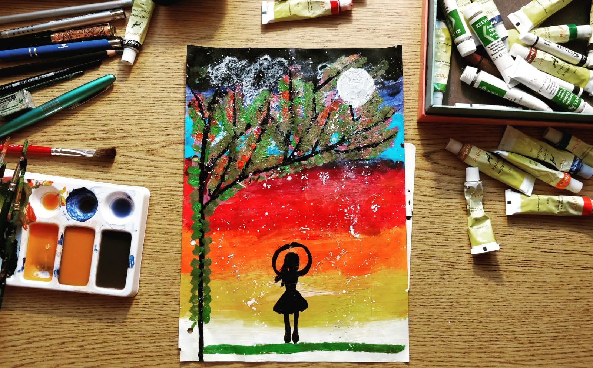
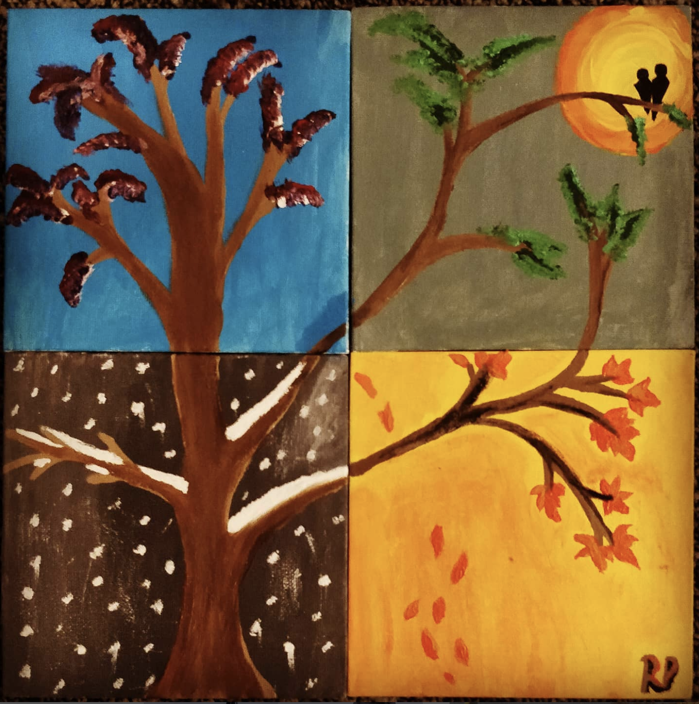
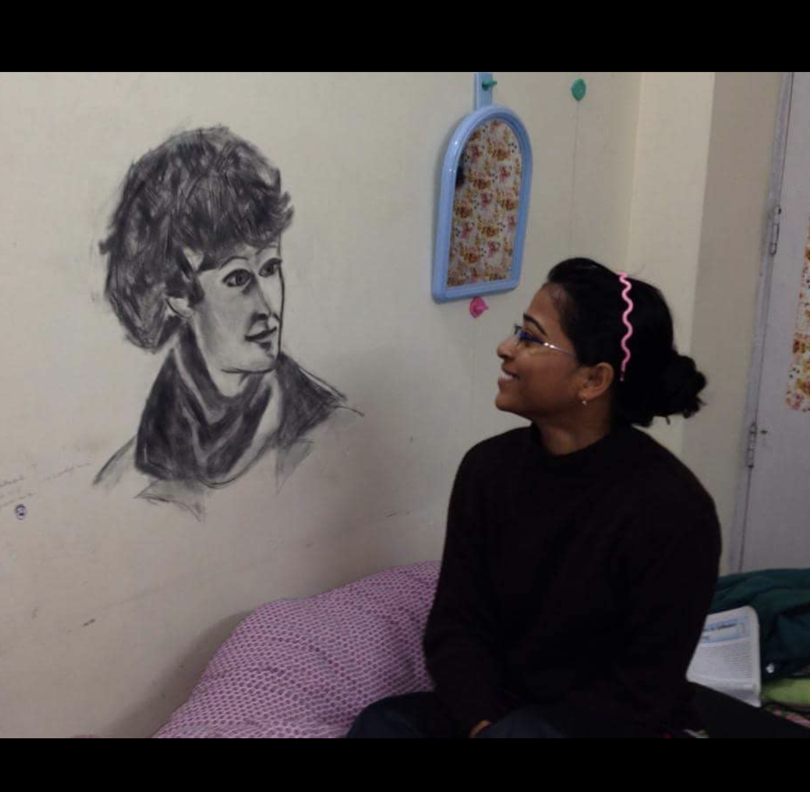
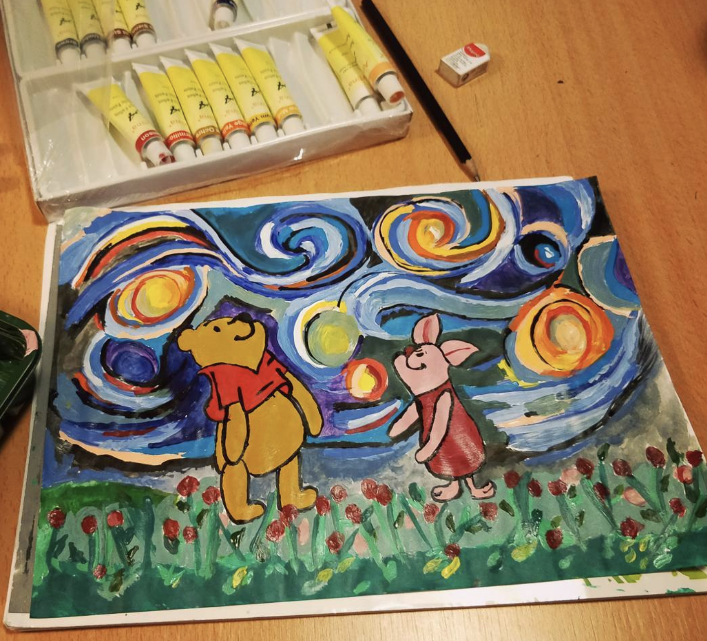
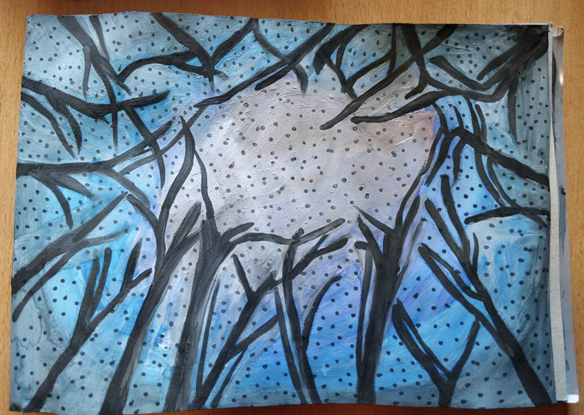
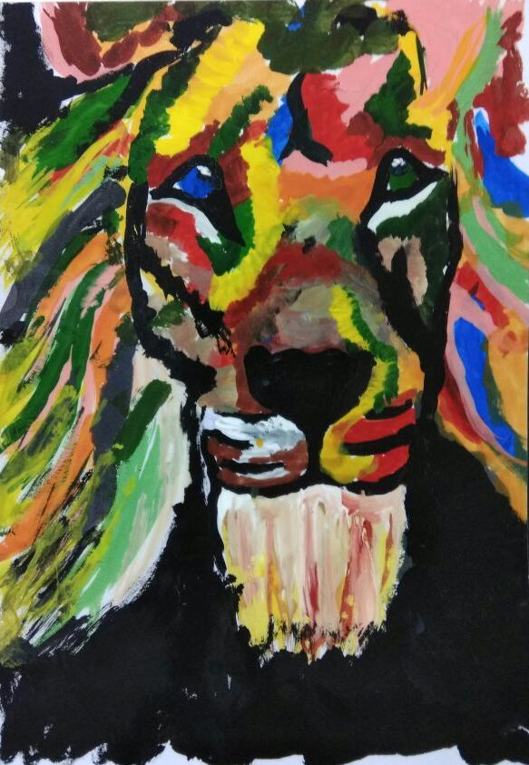
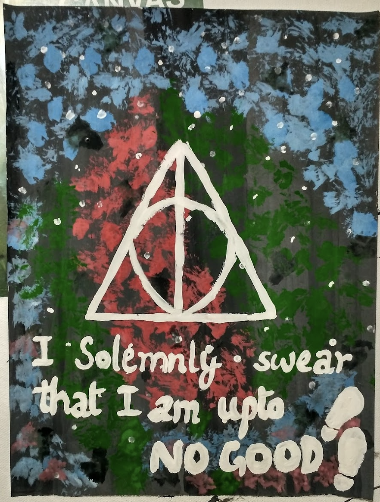
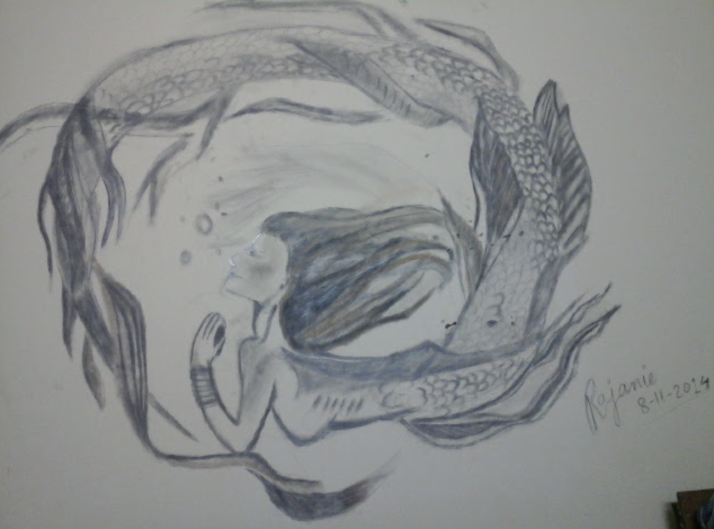
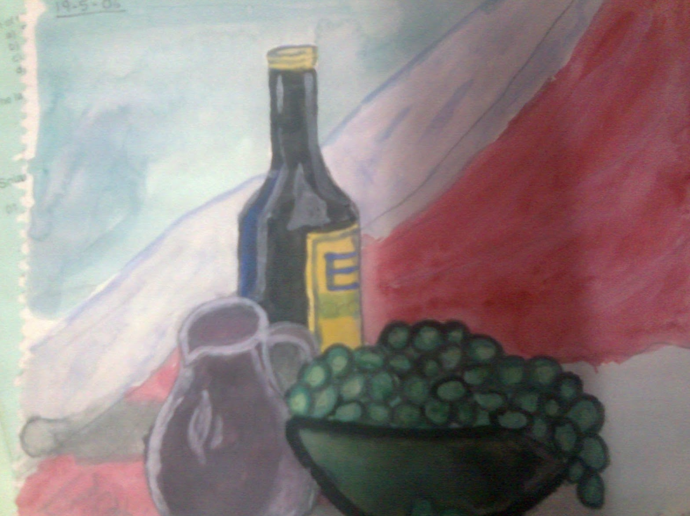

Paintings
I (occasionally) like to paint. Trying to be more consistent — here are some of them:

The Moonchild, 2021

The Four Seasons, 2021

Sherlock Holmes, 2014

Pooh and Piglet, 2018

No moon winter sky, 2018

The warrior, 2018

The boy who lived, 2018

The mermaid, 2014

My first painting (don't remember the year)